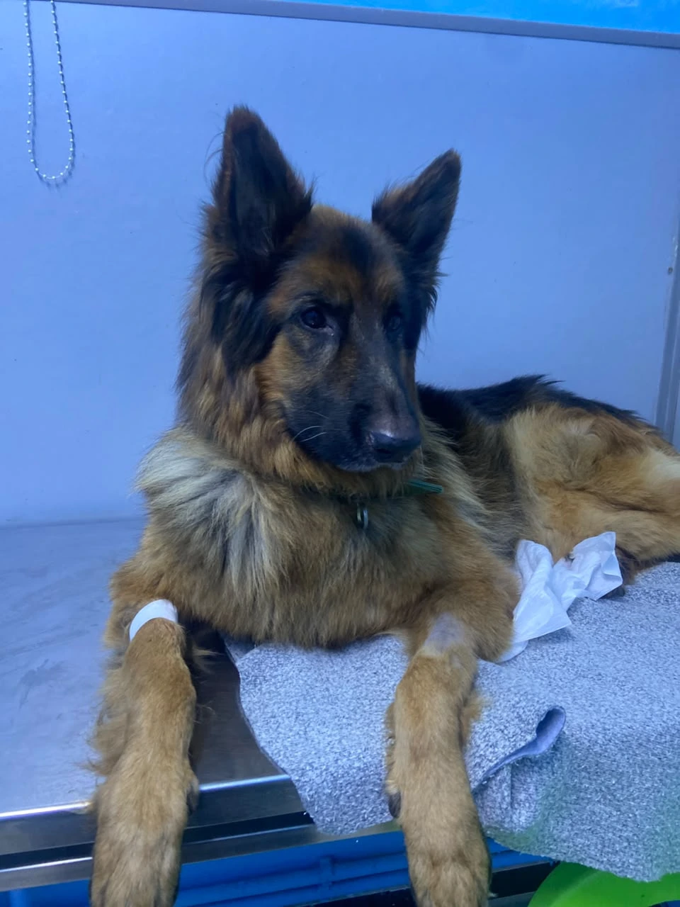
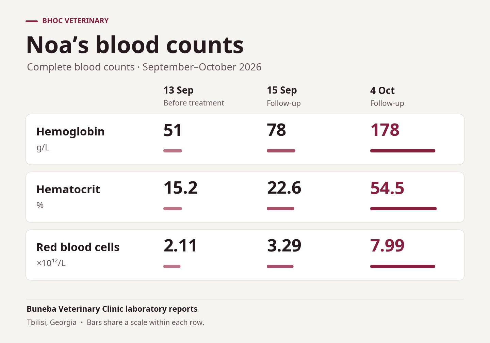
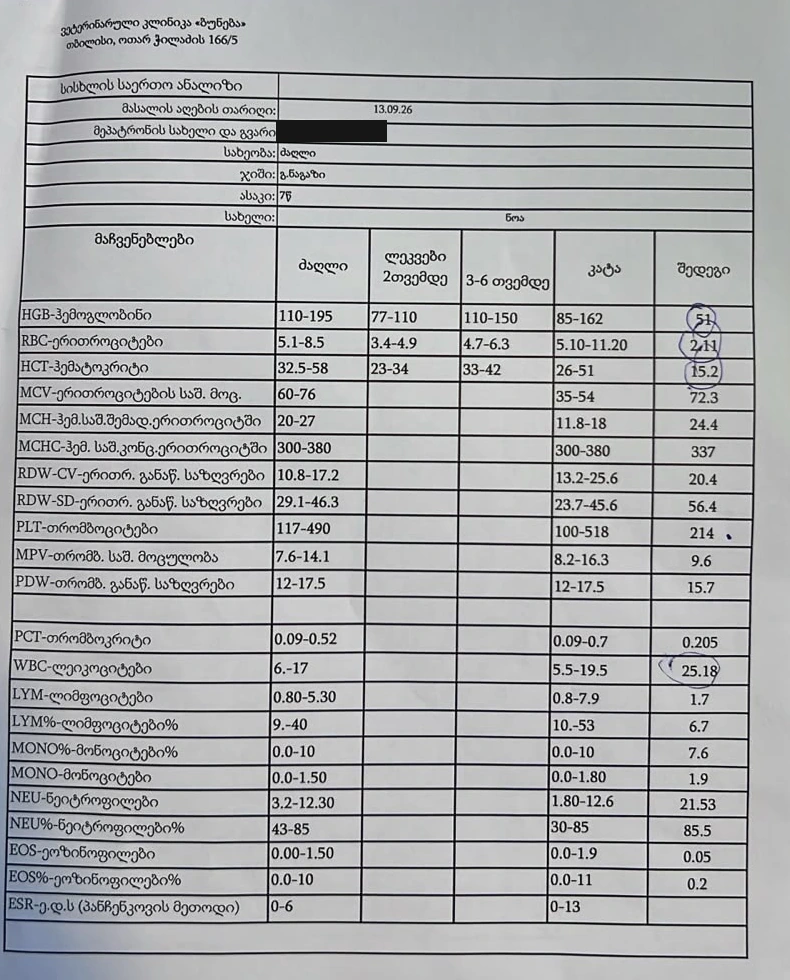
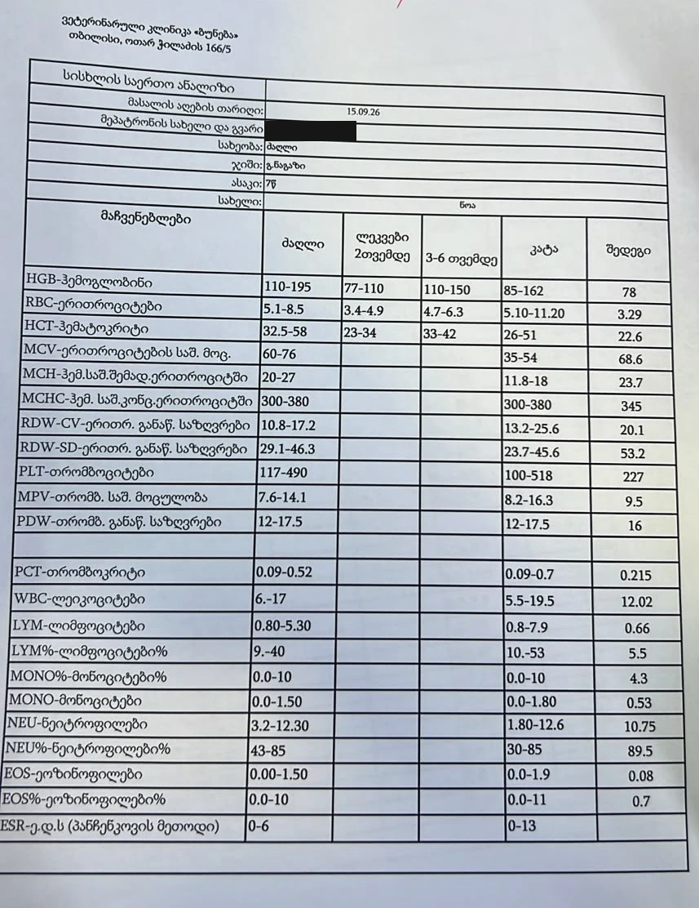
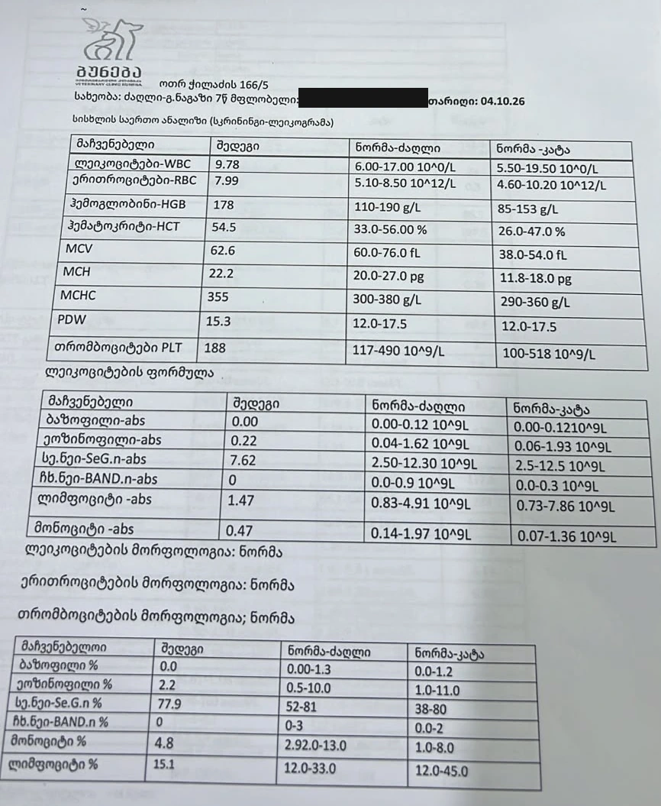
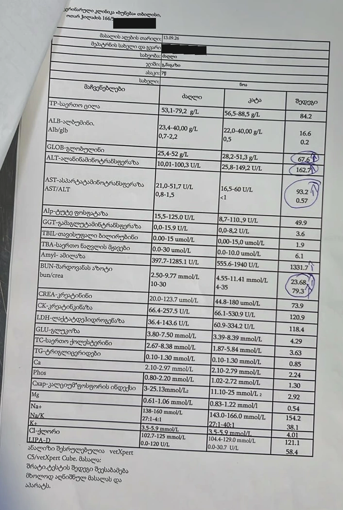
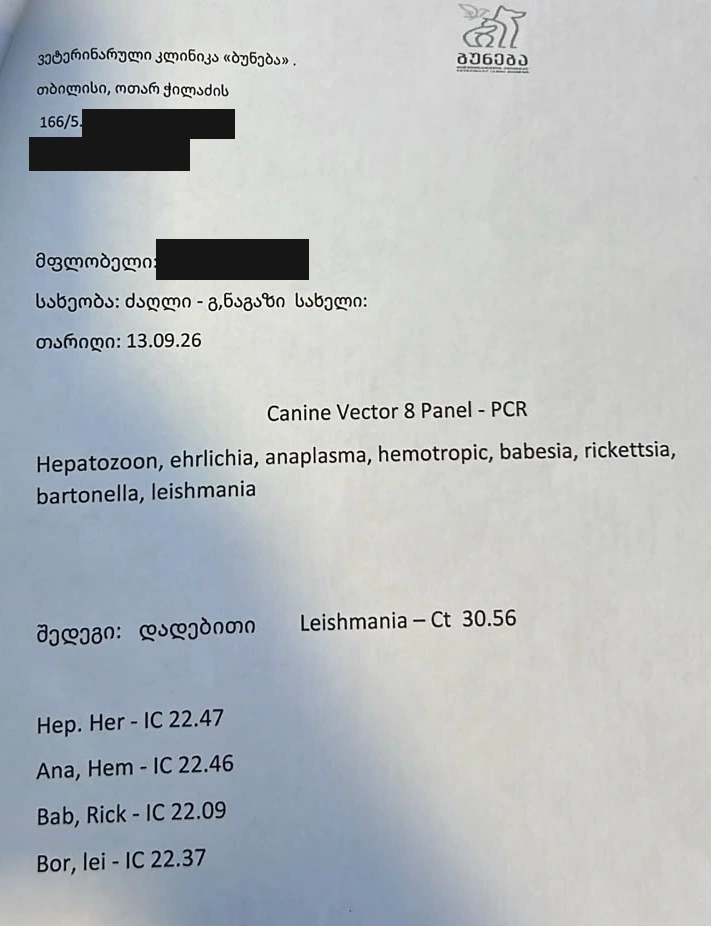

Severe Anemia in Noa, a German Shepherd With Leishmaniasis
Three blood tests document Noa’s course during veterinary care in Tbilisi, Georgia.


Noa, a seven-year-old German Shepherd, was brought to Buneba Veterinary Clinic in Tbilisi, Georgia, in critical condition. Noa had severe anemia and generalized weakness and was neither eating nor drinking. The clinic diagnosed leishmaniasis.
The veterinary team collected the first complete blood count on September 13, before treatment began. Noa then received two 120 mL administrations of investigational BHOC (Biological Hemoglobin Oxygen Carrier) 24 hours apart, for a total of 240 mL. The aim was to support oxygen transport during the critical phase while the team treated the underlying leishmaniasis and provided supportive care.
Blood counts before treatment and at follow-up
| Measurement | 13 Sep 2026 · Before treatment | 15 Sep 2026 · Follow-up | 4 Oct 2026 · Follow-up |
|---|---|---|---|
| Hemoglobin (g/L) | 51 | 78 | 178 |
| Hematocrit (%) | 15.2 | 22.6 | 54.5 |
| Red blood cell count (×10¹²/L) | 2.11 | 3.29 | 7.99 |
By October 4, 21 days after the first sample, all three measurements were within the canine reference intervals listed on the clinic’s follow-up report.


Laboratory report photographs
Open any photograph to view it at full size. Phone numbers and owner details are covered.









